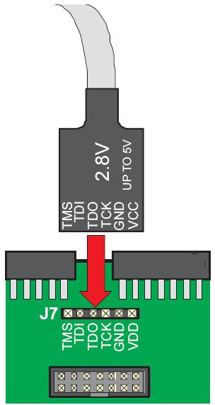
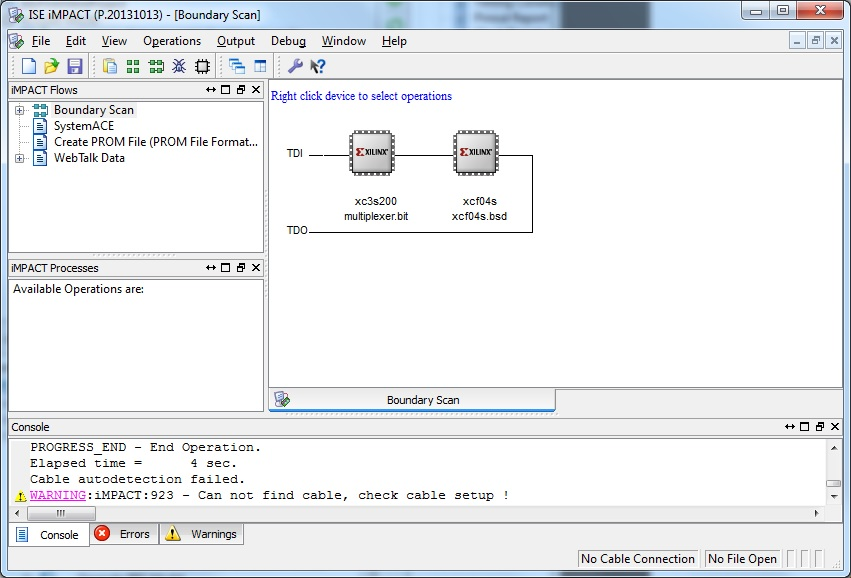
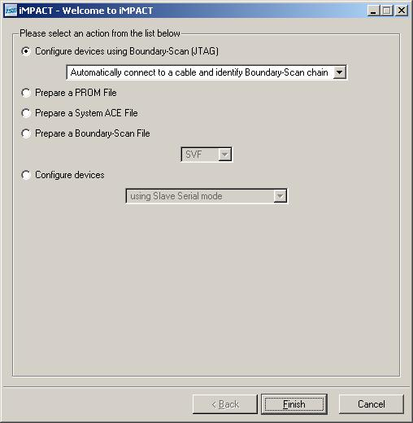
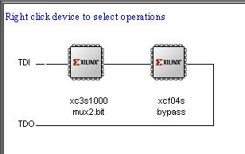
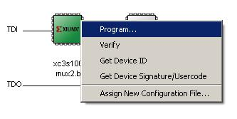
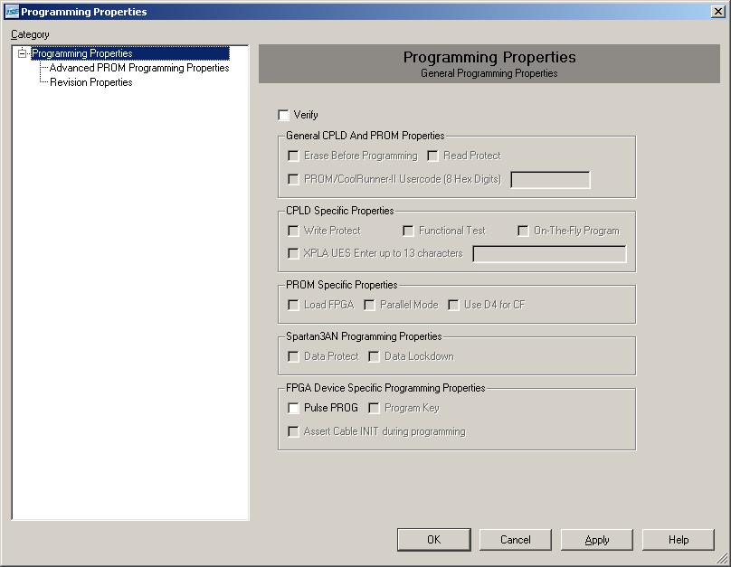

EEE6225 Systems Design
| Tutorial 1: Introduction to VHDL and Xilinx ISE |
| Programming an FPGA |
The exact steps to be carried out depend on your selected target board. The Digilent and Xess boards use a different method for downloading your design (.BIT) file using their own dedicated downloading program. (goto section 1). The Digilent boards are programmed via the industry standard JTAG connection using the iMPACT utility within ISE (goto section 2). |
| 1. XESS boards (eg XSA-100 and XSV-800) |
You are now ready to program an FPGA. Firstly, make sure you are using a PC with the XSA100 prototype board connected (it connects to the PC's Parallel Port) and that the power supply for this PCB is on. Then call up the board test routine to make sure it is connected properly: Start > All Programs > XSTOOLs > GXSTEST If all is well, you are ready to download your design. Call up the loading tool (Figure 1) with: Start > All Programs > XSTOOLs > GXSLOAD Now examine your projects working folder (perhaps by using Windows Explorer from the Start button) and you should still be able to see the .bit file. Click and drag this file and drop it into the gxsload dialogue box's FPGA/CPLD window. Now click on the Load button to download your design onto the FPGA. |
 Figure 1. Downloading design onto FPGA |
By using DIP Switches 1,2 & 4 whilst observing the centre bar of the 7-seg. LED you should be able to prove your multiplexer is working! Talk with the demonstrator about what you have seen and allow the demonstrator to confirm that your circuit is working properly. |
| 2. Digilent boards (eg Spartan 3 -200 and -1000 boards) |
First make sure that the board is connected to the PC using the JTAG cable. Be especially careful to check that the JTAG cable is connected to the board correctly (correct way round and not offset by a pin or two!). See Figure 2. |
|  Figure 2. Digilent S3 board JTAG connection |
The design is downloaded using the ISE iMPACT tool. This is found in the Processes window by expanding the Configure Target Device item to reveal Manage Configuration Project (iMPACT). Double click this item to run iMPACT. The window in Figure 3 should be displayed. Double check your FPGA board is correctly connected and powered up. |
|  Figure 3. iMPACT window on initially running |
Click on Finish (leaving "Automatically connect to a cable and identify Boundary-Scan chain" highlighted). The system will now search for attached JTAG devices and report the complete chain. A new dialog is displayed (Figure 4). If no chain is displayed then check the connections to the FPGA board and try again. |
|  Figure 4. Boundary scan mode [FIGURE TO BE UPDATED] |
Select your bitstream file (mux2.bit) and click on Open this defines the configuration data for the FPGA (first device on JTAG chain). A Second "Select New Configuration" dialog is displayed for the second device on the JTAG chain, this is the Xilinx Platform Flash (XCFxxx) which is located on the FPGA development board allowing it to be configured stand-alone from your PC (this is not our intention for now) next click Bypass to skip configuring this device. The tool should display the two devices as shown in Figure 5. |
|  Figure 5. The correct display for a Spartan III -1000 board |
Now click on the xc3S1000 or xc3s200 part with the RIGHT MOUSE BUTTON, this will display the context menu, click on Program. This is shown in Figure 6. |
|  Figure 6. Selecting Programming |
The program options dialog, Figure 7, should be displayed, click OK to commence programming... |
|  Figure 7. Programming properties [TO BE UPDATED] |
Programming the device is now taking place and if sucessful should display as in Figure 9. If "Failure" is displayed (Figure 8) repeat the programming step. If still unsucessful contact a demonstrator. |
Figure 8. Failure! Figure 9. Successful programming. |
Finally exit iMPACT. The Spartan II board can also be programmed to be stand-alone from the PC using the on-board FLASH memory this allows the FGPA to automatically be configured with your design on each power up. If this is needed for your project (near the end) to demonstrate to your supervisor then contact a demonstrator for details of how to do this. |
| End of tutorial. On to the EXERCISE |